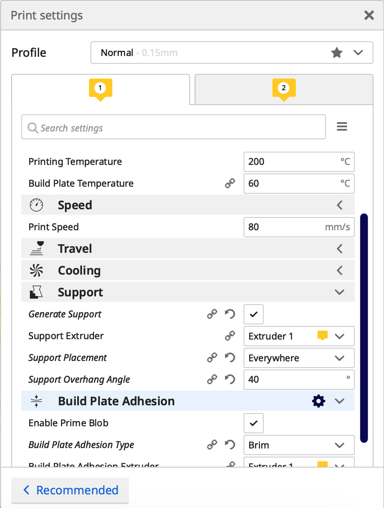

3D Print | 3D Scan
3D Print
The Project
In this project we were to design a model to 3D print. The model needed to be such that it could not be manufactured with addative / subtractive methods. The maximum weight of the material was 100g of plastic according to the slicer.
My Idea
When browsing for ideas I started by searching for 3d print ideas for everyday problems. I finally settled on drawing a headphone holder, which I intend on hanging under a table. My and my boyfriend's headphones are always taking up space on our table in the bedroom and it would be nice to have a specific place for them in the bedroom when using the table.
The Process
I went straight to Fusion 360 and started drawing. I began by sketching a rough shape of the headphone holder:
I then extruded out to shape it exactly like I wanted
And finally I mirrored the features I wanted to mirror and filleted all the edges I wanted to fillet. In addition, I added small holes for screws.
Manufacturing the Headphone Holder
In order manufacture the headphone holder, I began by downloading Cura, and exported my model in Fusion 360 to an STL file. I then opened that file in Cura. I tried different orientations to the object, and the time of printing and material reduced significantly when I rotated it as can be seen in the photos below. This is due to little need of support in the second orientation.
The settings used can be seen in the photo below.
I brought my STL file to the computer connected to the printers in FabLab, put in all my predetermined settings and saved the file on a memory card that was then connected to the printer. I then started printing the model with a PRUSA printer.


I then took of the brim and did my best to take the little supports off. I can now hang both of the headphones under the computer table so that they are not in the way!
3D Scan
The project
The project was simply to 3D scan an object.
The process
Now, I started off by trying out Regard 3D, however after a few hours of no feasible results (connection of dots did not go very well, my computer simply couldn't handle it, barely even the triangulation). I tried multiple different object and added a couple of hundred of photos, without any usable result. As my frustration grew, I (in an annoyed statee of mind) decided to try out Qlone which was a much more pleasant experience. It was quite easy, I watched only the beginning of this two minutee video, the process was pretty self-explanatory. I started out by printing out the mat from the Qlone website. You can also download the document here: download mat for scanning with Qlone. My next step was to place the object to scan on the mat.

I decided to go with a detailed small object, a Hraun candy. I then opened the app, pushed the big plus in the lower, right corner and a half-sphere came up when I aimed it at the object and the mat. I then pressed the record button and made sure the sphere was blue (as opposed to red), and moved the mat (and the object) in circles. The app is very user friendly, once you have filmed a certain area of the object, you can easily tell as that part of the blue sphere dissappears. You then move your camera up or down and around your object (or spin your object, which I found much easier) so that the whole sphere disappeaers.
Once I had done this, the 3D scanned object simply appeared on my phone screen. It is possible to get STL file from the app, but to do so I would have needed to pay a fee. I therefore only have a photo, a gif and a video of the 3D scanned object.

As you can see, the Hraun was very detailed and a pretty exact replica of the real thing. I certainly recommend this efficient way of 3D scanning.